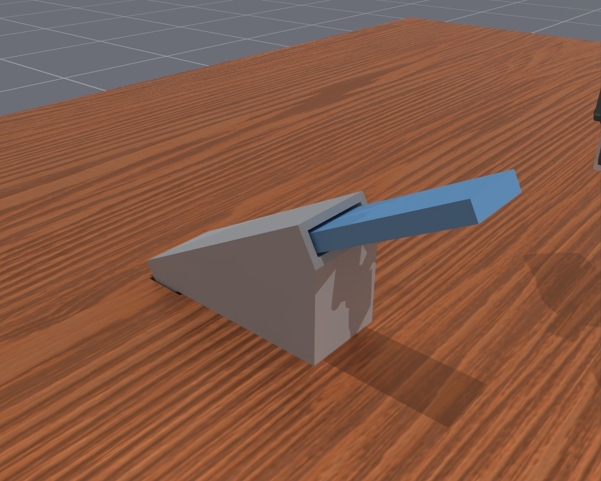
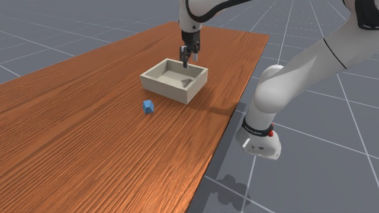
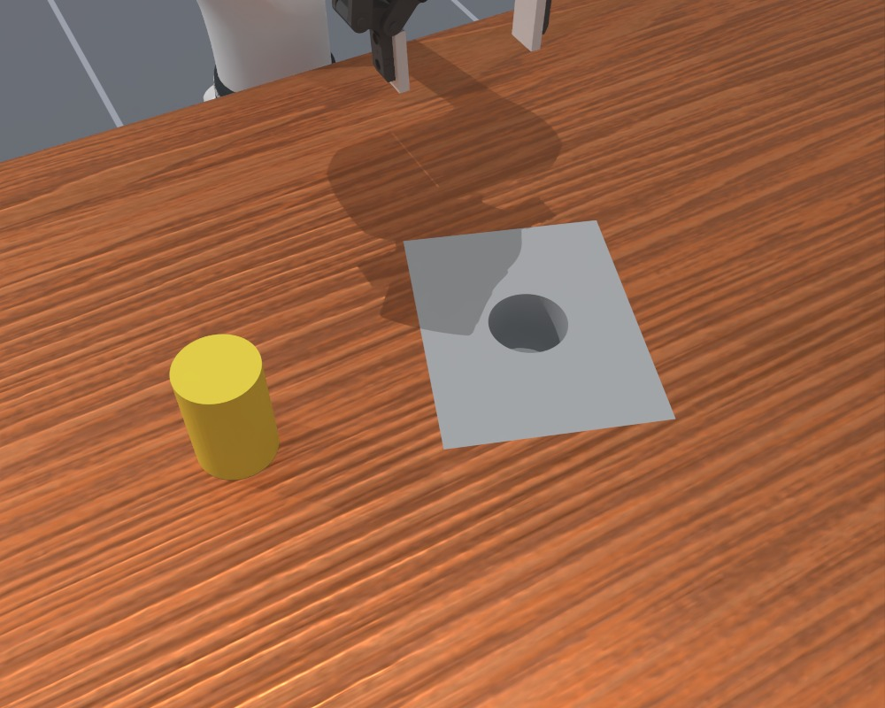
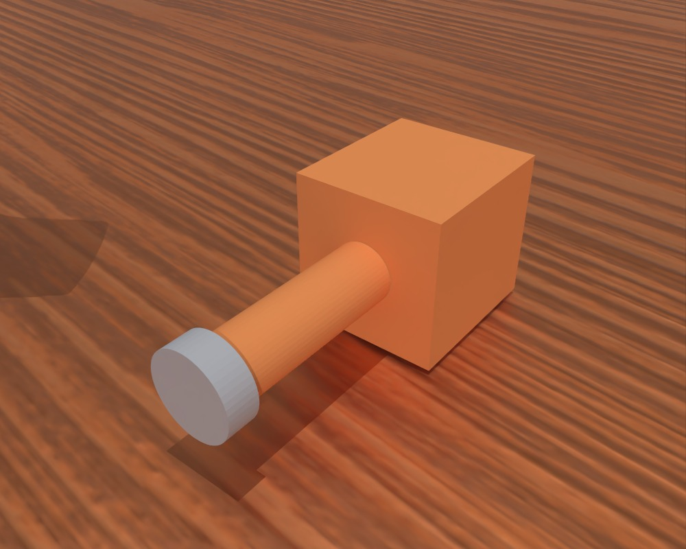
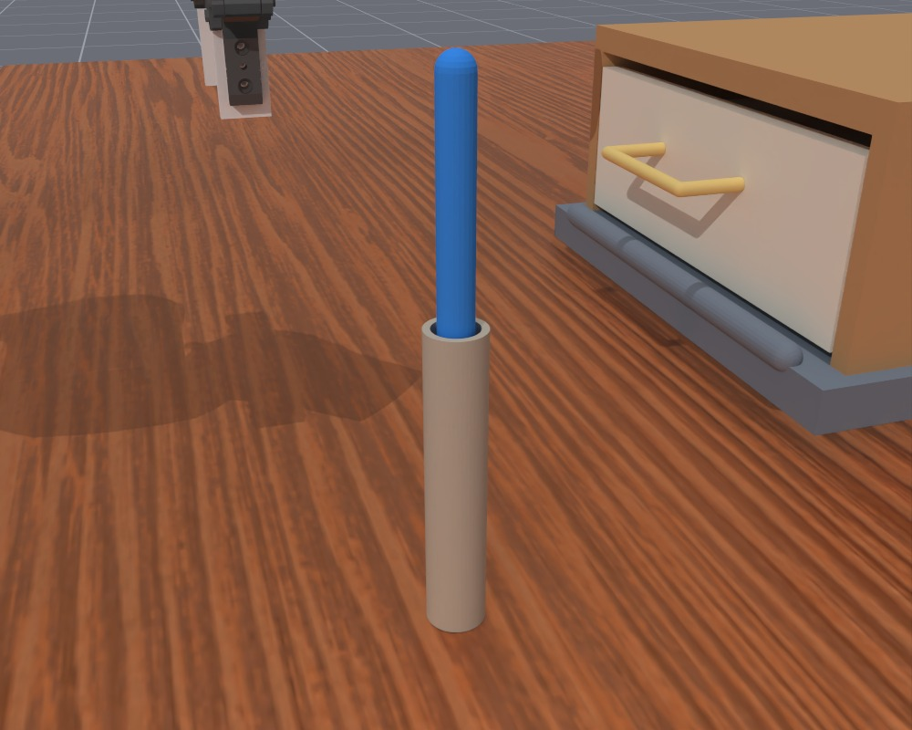
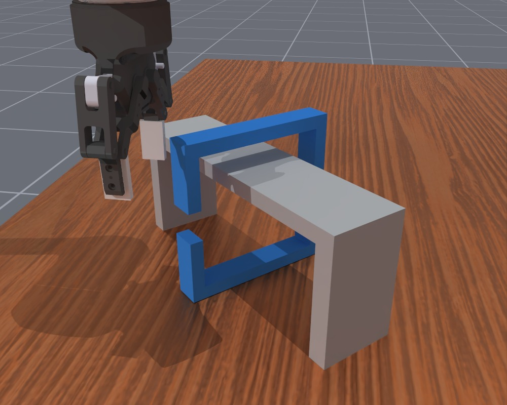

Introduction
We have recently seen many demos of Astra controlling robots. The idea of using language models for embodied tasks itself is actually not new, but Astra takes the “LLM part” further into lower-level control: it can now observe a scene, reason about what to do, directly generate actions, and repeat the process in response to changes in the environment. This allows the model to handle aspects of physical interaction that are difficult to capture through sparse, discrete, and sometimes ambiguous high-level plans alone.
Beyond Astra’s extraordinary semantic understanding of largely static scenes—recognizing objects, interpreting instructions, and reasoning about spatial relationships, which are already familiar and largely expected—what excites me more is its seemingly solid grasp of control logic and motion dynamics. This makes me curious about just how well Astra actually understands these concepts.
Can it anticipate how its commands will move the robot and affect the objects around it? Can it account for contact and geometric constraints, and adjust when the resulting motion differs from what it expected? In this blog, we investigate these questions through a series of experiments.
Task suite
Let’s first define the kinds of tasks we want to study. To investigate how well Astra understands motion and control, we need tasks that require demanding physical interactions with the environment. However, many existing benchmarks (more or less) emphasize semantic challenges, for example, whether a policy can recognize number-shaped objects, compare their numerical values, and place them into the corresponding slots. There is less emphasis on tasks that are easy to understand but difficult to complete because of complex physical constraints. With this in mind, we designed a new task suite as follows.
Scroll left or right to view all columns, including difficulty design and progress scoring. Select a thumbnail to open the full-size image.
| Task ID | Task name | Instruction | Illustration1 | Purpose | Difficulty design | Progress score2 |
|---|---|---|---|---|---|---|
| 0 | Constrained extraction | Pull the blue board completely out of the slot. |  |
Tests motion alignment and contact-aware control within a narrow channel. |
|
How far the board has been pulled along the channel toward fully clearing the slot. |
| 1 | Odd-object grasping | Pick up the blue object and put it in the basket. |  |
Tests grasp selection and transport across changes in object shape and contact properties. |
|
How high the bottom of the object has been lifted clear of the table toward clearing the basket rim. |
| 2 | Precision insertion | Insert the yellow object fully into the matching slot. |  |
Tests shape matching and precise pose control under tight insertion clearances. |
|
How deeply the object has entered the slot while fitting its shape. Deeper valid insertion earns more progress. |
| 3 | Standing stability | Keep the orange object upright with its gray base down, without the robot arm or gripper touching it. |  |
Tests reorientation, support, and controlled release to achieve stable standing. |
|
Combines bringing the object upright, with its gray base down, and how long it stands steadily on the table after release. |
| 4 | Tool-assisted drawer | Use the blue tool to open the drawer. |  |
Tests tool grasping and engagement to transmit force through contact and open a resisted drawer. |
|
How far the held tool has opened the drawer. Opening it directly with the robot’s hand adds no tool credit. |
| 5 | Ring release | Take the blue open ring off the fixed bridge. |  |
Tests spatial reasoning and coordinated translation and rotation through a constrained opening. |
|
How much closer the center of the ring’s opening has moved to the nearest available exit beside the bridge. |
1 All thumbnails show the medium difficulty initial scene (seed 42).
2 Progress scores range from 0 to 1; higher is better.
Main performance
Astra results
Each cell shows SR / PS: success rate and mean progress score. Click a cell to watch its samples in the side panel.
| Task | Easy | Medium | Hard | Extra hard (xhard) |
|---|---|---|---|---|
| Task 0Constrained extraction | ||||
| Task 1Odd-object grasping | ||||
| Task 2Precision insertion | ||||
| Task 3Standing stability | ||||
| Task 4Tool-assisted drawer | ||||
| Task 5Ring release |
Astra is far from perfect, but it often produces sensible actions and makes meaningful progress, completing or coming close to completing several tasks. It's impressive to see that Astra understands when and how to apply force in specific directions and at specific angles, use simple tools, and translate its spatial reasoning into effective actions. And what surprised me most were some of the behaviors that emerged along the way, for example, online adaptation, coordinated fine adjustments, incremental progress, physical understanding, and a surprisingly human-like check.
Where control still breaks down
At the same time, the failures show where Astra still struggles. These include tasks requiring precise control (task0@xhard, task1@hard, task2@hard&xhard), sustained contact and careful adjustment (task3), and more inventive ways of interacting with objects (task1@xhard, task4, task 5).
These failures don’t surprise me too much. The relatively low decision frequency, together with the difficulty of generating precise numerical contents for LLMs like Astra, already gives us some reason to expect them. We also haven’t done any . Prompts that direct the model’s attention to a particular part of the scene, or ask it to consider certain factors before acting, might improve its performance further.
What did surprise me was how much Astra struggled with things I had expected it to find relatively easy. On the medium version of task 1@medium, for example, it often fails to choose a sensible grasping strategy. Even after the , Astra may keep trying to grasp it from the same angle, without considering whether a different pair of contact surfaces would work better. Some successful attempts seem to happen because repeated grasping attempts jostle the object into an easier-to-grasp pose, rather than because Astra deliberately identifies and switches to a better grasp.
Astra's memory is also not always reliable. When objects obscure important features, it can lose track of the scene. In one insertion attempt, the object falls and covers the slot, and Astra struggles to recover the alignment needed to continue. This suggests that its spatial understanding may become unreliable when parts of the scene are no longer visible. Its handling of the robot’s own kinematics also seems uneven. In some attempts, it steers the arm into awkward configurations that make its intended movements difficult to execute.
MolmoAct2 results
Each result shows SR / PS: success rate and mean progress score. Click a task’s difficulty cell to watch its samples in the side panel.
| Task | Easy | Medium | Hard | Extra hard (xhard) |
|---|---|---|---|---|
| Task 0Constrained extraction | ||||
| Task 1Odd-object grasping | ||||
| Task 2Precision insertion | ||||
| Task 3Standing stability | ||||
| Task 4Tool-assisted drawer | ||||
| Task 5Ring release |
We also evaluate MolmoAct2 on the same task suite. MolmoAct2 performs worse overall in these experiments, but it also shows some useful generalization to our tasks. In particular, it shows promising grasping behavior on irregular objects. On task 1, it reaches a higher mean progress score than Astra at medium difficulty.
Control mode3
| Variant | SR | PS | Turns / rollout | Tokens / rollout |
|---|---|---|---|---|
| H=5 (single target) | 20% | 0.33 | 86.55 | 972,488 |
| H=10 (single target) | 0% | 0.11 | 46.00 | 502,470 |
| H=5 (multi targets) | 10% | 0.16 | 87.65 | 1,048,250 |
| H=10 (multi targets) | 20% | 0.30 | 42.95 | 521,191 |
To start with, we ask how we should use an LLM agent for robot control—in other words, what “action language” should it speak to the downstream executor to control the robot effectively and efficiently?
Borrowing the codebase from inspect-robots, we start with a straightforward approach: let the LLM choose the next target end-effector (EEF) pose. The executor moves toward that target, then returns an updated observation so the model can decide what to do next. The LLM keeps choosing the next desired state in a closed loop.
We use H to express the allowed target offset as a multiple of a δ*, which we set empirically for each robot embodiment. Its components define small translation and rotation limits along each axis. In this , the model outputs a motion increment δ ∈ [−Hδ*, Hδ*], with the bounds applied componentwise. This specifies one target relative to the current pose, which the executor tracks for up to H control steps before the next model decision. Increasing H therefore lets the model request a more distant target and gives the executor a longer window to move toward it.
With H=5, the robot arm’s movements appear smoother. With H=10, the motion looks more awkward, and Astra needs repeated adjustments to reach its intended pose. A larger H allows larger movements while also leaving more time between observations. That gives Astra fewer opportunities to notice execution errors and correct them. Shorter execution windows and more frequent replanning could help, but they also require more model calls, making each rollout more expensive and slower.
This made us wonder whether a single target was the best way to use those H execution steps. A distant target tells the robot where to go, but gives Astra no way to specify intermediate changes in direction. What if it could describe several smaller movements in the same model call?
In this , the model outputs an ordered sequence (δ1, …, δH), where δi ∈ [−δ*, δ*] for i = 1, …, H. Each increment stays within the base motion range and defines the next target relative to the previous planned target. The executor follows the resulting H targets in order, spending one control step on each. Both modes therefore have the same H-step execution budget per model call: over a full execution window, tracks one target for H steps, while tracks H targets for one step each. The difference is how the model expresses the motion within that window.
Interestingly, this approach reversed the trend we observed as H increased. The larger chunk performed better than the smaller one, suggesting that Astra could make use of the more detailed motion representation. However, neither chunk setting matched the mean progress achieved by with H=5. Our working hypothesis is that Astra still struggles to turn its intentions into a coherent sequence of small movements. A later movement may assume that an earlier target has already been reached, even when the robot is still catching up. The planned sequence can also contain abrupt changes rather than forming a smooth trajectory. Limitations in the executor and controller can widen the gap between the intended motion and what actually happens.
The quality of Astra’s generated trajectories
As discussed above, Astra’s planned trajectory may not be faithfully reproduced by the low-level controller. In , the controller moves on after just one control step per target, even if the robot has not reached it. The robot can therefore fall behind the planned sequence, making it difficult to tell whether a failure comes from the trajectory itself or from how it is executed.
To examine the quality of Astra’s generated trajectories more closely, we ran an additional experiment that doubles the execution time for each planned segment. In the variant, each segment is spread over two control steps, so an H-target sequence uses 2H steps. The number of model-specified targets and their motion bounds stay the same, while the controller gets more time to follow the intended path. The longer execution window also means that Astra receives its next observation later in simulated time.
| Variant | SR | PS | Turns / rollout | Tokens / rollout |
|---|---|---|---|---|
| H=5 (single target) | 20% | 0.33 | 86.55 | 972,488 |
| H=10 (single target) | 0% | 0.11 | 46.00 | 502,470 |
| H=5 (multi targets) | 10% | 0.16 | 87.65 | 1,048,250 |
| H=10 (multi targets) | 20% | 0.30 | 42.95 | 521,191 |
| H=5 (multi targets, 2× time) | 10% | 0.27 | 87.35 | 1,061,921 |
| H=10 (multi targets, 2× time) | 0% | 0.09 | 44.90 | 561,360 |
3 The Control mode results and the following ablations use task 0@xhard. Within each comparison, all variants are evaluated on the same set of seeds.
Memory4
Next, we look at how memory length affects Astra’s performance. Here, memory length means the number of previous interaction turns included in the model’s context.
With memory length set to 0, Astra struggles to figure out how to control the particular robot it is given from the available camera viewpoints. This suggests that one important role of memory is helping the agent connect its commands to their physical effects: it can look back at what it asked the robot to do, compare that with the visual feedback, and gradually work out how to control it.
With a short memory of two turns, Astra starts to pick up some basic control logic, but still struggles to finish the task. It often repeats similar actions without making much progress. In our experiments, longer memory makes successful completion more likely, while also reducing the number of decisions needed. This points to another role of memory: helping the agent recognize what went wrong in previous attempts and decide what to change. Having more of that history available gives the model a better basis for reasoning about its next move.
| Variant | SR | PS | Turns / rollout | Tokens / rollout |
|---|---|---|---|---|
| Memory: 0 turns | 0% | 0.00 | 180.00 | 463,495 |
| Memory: 2 turns | 5% | 0.05 | 185.40 | 810,140 |
| Memory: 5 turns | 30% | 0.32 | 169.35 | 1,198,979 |
| Memory: 10 turns | 30% | 0.46 | 154.79 | 1,774,725 |
4 For Memory and Reasoning, we increase the execution budget from the normal-speed Control baseline of 450 physical control steps to 900 steps, allowing more time for useful behavior to emerge.
Interestingly, we also noticed what looks like an “aha” moment in some rollouts: Astra seems to suddenly find an approach that works, whether that means a small nudge or a different grasping strategy. We suspect that memory plays a role here, too. Once enough useful feedback is available in the context, the model may be able to piece together a better strategy.
One-shot learning from a demonstration
Viewed this way, memory gives the model an opportunity to learn in context during a rollout. That led us to another question: could a prerecorded trajectory provide some of the same benefits? To explore this, we injected a recorded trajectory into Astra’s context, including the full sequence of observations and the agent’s action outputs. In all three rollouts below, Astra has no online memory (memory length = 0). The model receives the current observation on each turn, but no previous turns from the ongoing rollout. In the demonstration conditions, the fixed prerecorded trajectory remains in its context.
For comparison, we also include a no-demonstration rollout from the memory=0 experiment above. We can see that with an in-domain demonstration, Astra was able to complete the task without online memory, and even did so more efficiently in this example. When we switched to an out-of-domain demonstration, Astra did not finish the task, but its control was noticeably better.
No demonstration
Astra · Online memory off (mem=0) · Open video
The video could not be loaded. Check that the original recording is available, or open the video directly.
In-domain demonstration
Astra · Online memory off (mem=0) · Open video
The video could not be loaded. Check that the original recording is available, or open the video directly.
Out-of-domain demonstration
Astra · Online memory off (mem=0) · Open video
The video could not be loaded. Check that the original recording is available, or open the video directly.
These examples fit our earlier hypothesis that memory serves at least two purposes: learning how to control the robot, and learning how to adjust when an approach does not work. A demonstration from another task may help with the first, while feedback from the current task—or a relevant demonstration—may be needed for the second.
Reasoning effort
With the other settings held fixed, increasing reasoning effort from low to high generally improved performance in our experiments. Astra seemed better able to use the context to work out what was happening and adjust its actions. But there was an interesting exception: xhigh actually performed worse than high. Looking through the trajectories, we saw what looked like a form of “overthinking.”
At higher reasoning effort, Astra tended to make larger, more frequent changes to its action strategy. It spent a substantial part of its limited step budget repositioning the robot and trying different approaches. Yet a stalled attempt does not always mean the strategy itself is wrong. Sometimes, the robot only needs a slightly different angle or position. In those cases, a quick cycle of small adjustments and another attempt may work better than repeatedly reconsidering the whole approach.
This suggests a trade-off between refining a strategy through trial and error and stepping back to rethink it. More reasoning can help Astra recognize when it needs a different approach, but it may also lead the model to abandon a promising one too quickly. For robot control, knowing when to keep trying—and when to change strategy—seems to be an important part of the problem.
| Variant | SR | PS | Turns / rollout | Tokens / rollout |
|---|---|---|---|---|
| Low reasoning effort | 15% | 0.30 | 159.84 | 1,707,936 |
| Medium reasoning effort | 30% | 0.46 | 154.79 | 1,774,725 |
| High reasoning effort | 50% | 0.66 | 146.15 | 1,843,795 |
| Extra-high reasoning effort | 40% | 0.53 | 160.40 | 2,218,672 |